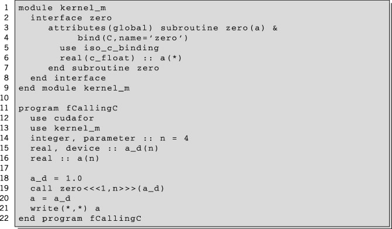
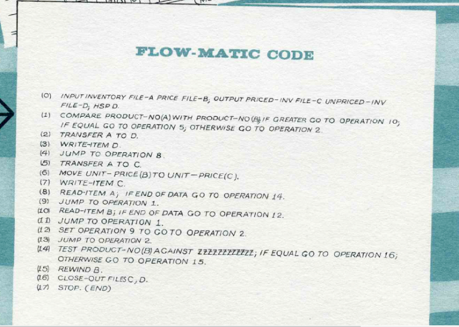

In 1954, FORTRAN was invented at IBM by John Backus. It was the first widely used high-level general purpose programming language to have a functional implementation, as opposed to just a design on paper. It is still a popular language for high-performance computing and is used for programs that benchmark and rank the world's fastest supercomputers.

Another early programming language was devised by Grace Hopper in the US, called FLOW-MATIC. It was developed for the UNIVAC I at Remington Rand during the period from 1955 until 1959. Hopper found that business data processing customers were uncomfortable with mathematical notation, and in early 1955, she and her team wrote a specification for an English programming language and implemented a prototype. The FLOW-MATIC compiler became publicly available in early 1958 and was substantially complete in 1959. FLOW-MATIC was a major influence in the design of COBOL, since only it and its direct descendant AIMACO were in actual use at the time.
